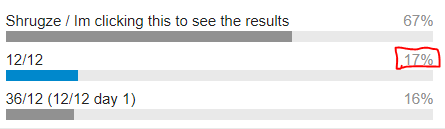

ok but
just make it a cop13er or smth
:^)
that’s a joke lads
Oh crap how did you know it was a bastard cop13er in disguise
1 Like
i didn’t
that was a joke too
Ah but you see.
That was also a joke

none of those phase lengths, anything less than 48/24 is too hectic
no way am I running a 48/24 mash lol
36/12 is already sort of stretching it but I know this forum hates 12/12 for watever reason
Imagine 12/12 working with Aussie time zones. LUL
Like i get it, but especially for nights i think the 24 is so much nicer than anything. So u have a day break from it. Guess thats not common for mashes. But fr marls jojo game literally I went to bed to wake up to a new day. Was absolute shit for my mental state
I mean the point of large mash games is that you don’t read everything and that it’s fast-paced
long phases are probably harder because people will still threadcamp and if everyone is reading all of it and some aren’t it’s just hell if you don’t have the time
1 Like
I find 48/24 the best in my case. Especially when SoD/EoD means I miss the first several hours of each day because of sleep.
I’m not
running a 48/24 mash
you know what just forget it
1 Like
I guess, I never played in anni due to the stress of it. Just like too much for me. Just spreading the good word of 24 hour nights. More than 48/24
12/36
12 hour days 36 hour nights
1 Like
actually 24/24 could potentially work for a mash if we’re branching out into the exciting world of 36/12
pros:
- only need one time that works for SoD/EoD, rather than two
- equally “short” as 36/12 (cycles add up to 48 hours)
- full 24 hours to rest
cons:
- literally as much night as day
1 Like

bottom text
these phase lengths suck imo
I personally like short nights (hah) but withschool and stuff they would be bad
short phase lengths are kind of just a thing in mashes
unless you have a metric ton of death super early i’d say its downright essential
1 Like
i will say that im just not going to play a 25+ player game with longer than 36/12 phases
1 Like